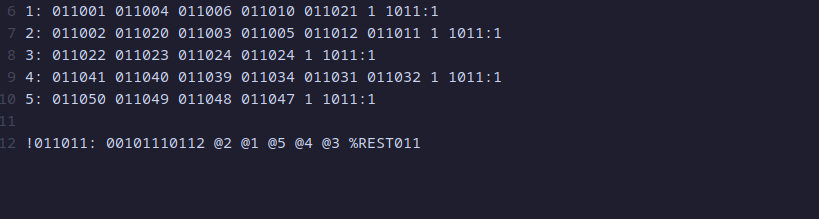

Likes: 1
Subject
This week subject is about minkernel 0.0.3 new editing option
Cpu familly
Here you have x84_x64 generic wich is the normal mode
x84_x64 limited wich is good if you have an old pc or your cpu has some pins bending
x84_x64 zen use this only if you have an AMD cpu
There is not a speed diference
Cpu log
Here you chose the memory of cpu log until it is restarting , the higher the memory the fewer the resets wich gives more performance
lib syscalls
Enable this if you want to translate unix like apps for lexOS
Process group formation
automatic in 3 groups : it will be 3 groups the base management and support , that will load separate
automatic in 2 groups : exactly like the previously one but with 2 groups so doesnt need that much power
custom : here you can make your own groups and load them
first make a file named process.sync then there make a group to do that use 1: ....
there are 3 types of process base management and support (base 1-12 management 13-23 support 24-50)
to alert a process you need to make it like this 011001 (the 011 at start is the process flag and 001 is the number process)
this an example of process.sync you see that after you tell what are the process in that group you need to put 1 1011:1
At the bottom of the code you need to tell the program how to load them (%REST011 is the rest of process only if you didn't all the process)
this give you the control the groups
if there are more groups it will use more ram but a little usage of cpu if you have only like 3 or 4 groups and load the rest you will not need much memory
Contact
For anything else i wait you in matrix/element in my server https://matrix.to/#/#lexos:matrix.org wait you there to have some tips for c go or rust for lowlevel or apps.I will even join sometimes in a voice group to chat and program in a team :)
0
0
0
0